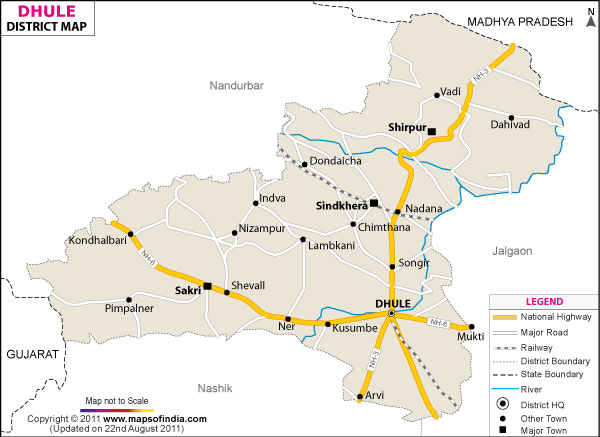
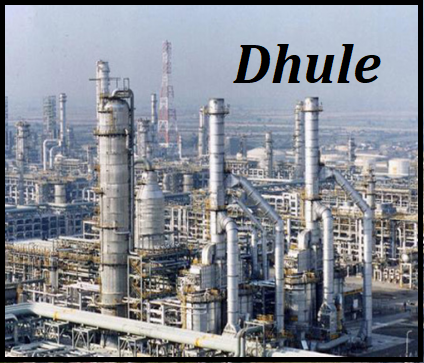

How to Reach
By Road
There are many convenient ways to reach Dhule by road. It is 141 Kms from Shirdi, 146 Kms from Aurangabad, 259 Kms from Indore, 332 Kms from Pune and 322 Kms from Mumbai and 503 Kms from Bhopal.This city has been connected by Maharashtra State Road Transport (MSRTC) buses to the major cities like Surat, Mumbai, Pune, Indor or Nagpur etc .
By Train
The nearest Railway Station is Dhule , connected to Chalisgaon Junction
Demographics
As of 2011 India census, Dhule had a population of 375,603. At the 2011 census, males constitute 52% of the population and females 48%. Dhule has an average literacy rate of 85%, higher than the national average of 74%: male literacy is 80% and, female literacy is 69%. 13% of the population is under 6 years of age.
Industries and Economics of the City
Dhule is well known for purest 'milk and ghee' production, maximum cultivable land and production of groundnut, foremost in agro-based industries, leader in wind power generation. In the Sakri Taluka there is the one of the Asia's Largest Solar Project near Chhadvel Korde village. Also there is Asia's largest Wind Mills Project run by Suzlon Company near Chhadvel Korde and Nijampur villages. Dondaicha in Shindkheda taluka is famous for the chilly market. There is also a Starch factory here. Many cottage industries are operational in the district. Beedi rolling, pottery, brick making, knitting saris on handlooms, oil extraction from ground nut and sesame are few of them. Wood cutting units are operated at Dhule, Shirpur and Pimpalner.[better source needed] Being centrally located on about to complete Delhi Mumbai Industrial Corridor Project (DMIC), Safexpress has established India's largest Logistics Park in the outskirts of Dhule City on National Highway No. 6 As part of the successful development of the region under DMIC, there is a need to focus on ensuring requisite irrigation infrastructure for ensuring availability of water throughout the year.
1)Dhule Industrial Area
M.I.D.C. has planned to develop an industrial area on 400.35 Hect. of land. About 278.08 Hect. of land has come into possession of MIDC. MIDC has provided all the basic infrastructure such as roads, street lights, water supply pipe lines in this area. MIDC has constructed an earthen dam on Motinala to fulfill the requirement of water of the industrial area. MIDC has provided water supply scheme of 4.50 MLD capacity. Presently the consumption of the water is about 2.20 MLD. The rate of allotment of industrial plot is Rs. 100.00 per sqm. The Association namely "Dhule Avdhan Manufacturers Association Avadhan, Dhule" has been established for development of Industries in MIDC Dhule Industrial Area. The expansion of existing MIDC has been proposed vide Phase- II in Raver area, situated in outskirts of the city, which is having area of more than 1600 acres (643 hectares) and currently this proposal is under consideration of State Government. It is also worthwhile to note that, planned Manmad-Dhule-Indore Railway line have also been considered in the original proposal of DMIC (Delhi-Mumbai Industrial Corridor Project), which will boost Industrial growth in and around city.
2) Nardana Central Government sponsored Growth Centre
MIDC has planned to develop an industrial area on 750.09 Hect. of land. About 648.56 Hect. of land has come in possession of MIDC. The reservation of water for 4.38 MM3 per year has been granted by Irrigation Department. MIDC has provided the water supply scheme for this industrial area. This scheme includes Jackwell, 600 mm dia PSC raw water rising main (13.50 km.), 400 mm dia PSC pure water rising main (9.50 km.) water treatment plant of 6 MLD capacity & 1000 cum capacity ESR. Presently MIDC is developing phase I having land 480 Hect. MIDC has completed 7.22 km. WBM roads, out of which asphalting of 2.10 km road is completed. MIDC has also provided the water supply distribution pipe lines. The rate of allotment of industrial plot is Rs. 50.00 per Sqm. Under proposed DMIC, The Nardana Textile Park is being set up 30 km from Dhule City. The total area of the park will be approximately 648 hectares, on which 72 plots will be demarcated. The Dhule airstrip, just 30 km away from the industrial area, will provide accessibility to the park and facilitate a quick movement of material.